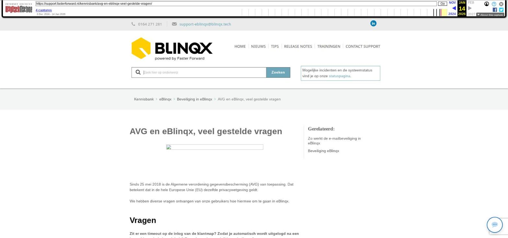

AVG en eBlinqx, veel gestelde vragen

Tekstinhoud
AVG en eBlinqx, veel gestelde vragen
Sinds 25 mei 2018 is de Algemene verordening gegevensbescherming (AVG) van toepassing. Dat betekent dat in de hele Europese Unie (EU) dezelfde privacywetgeving geldt.
We hebben diverse vragen ontvangen van onze gebruikers hoe hiermee om te gaan in eBlinqx.
Vragen
Zit er een timeout op de inlog van de klantmap? Zodat je automatisch wordt uitgelogd na een bepaalde periode inactiviteit? En zo ja, na hoeveel tijd treedt die op?
Dit gebeurt niet, men wordt dus niet uitgelogd na een bepaalde inactiviteit.
Worden de wachtwoorden niet in cleartext opgeslagen, maar gehashed?
Deze worden gehashed opgeslagen.
Is er encryptie tussen de klantmap en de eBlinqx database?
De verbinding tussen de client (Laptop, tablet, telefoon etc..) en onze servers is encrypted middels SSL.
De verbinding tussen onze webservers en database servers wordt afgehandeld binnen het cluster wat betekent dat dit niet via het internet verloopt. Deze verbinding is dan ook niet encrypted.
Hebben jullie een gestandaardiseerde privacyverklaring waar we mee kunnen werken?
Blinqx Bergen op Zoom heeft geen gestandaardiseerde privacyverklaring voor jou. Dit is jouw verantwoordelijkheid naar de eindconsument toe. Dit document kan wel door jullie aangeleverd worden, zodat het aan een workflowactie gekoppeld kan worden. Deze kan aan een e-mail toegevoegd worden of in de e-mail een link naar jouw website waar dit document staat.
Wat gebeurt er met het BSN nummer?
Het BSN nummer wordt niet meer automatisch overgenomen vanuit het adviespakket. Mocht dit wel gewenst zijn kan dit per omgeving aangezet worden. Het is mogelijk de nu aanwezige BSN nummers voor jou te verwijderen. Stuur hiervoor een opdracht naar support-eblinqx@blinqx.tech.
Hoe staat het met de portabiliteit (overdragen klantgegevens)?
Alle klantgegevens zijn te exporteren. Zie onze uitleg in de releasenotes van 15 mei.
Hoe staat het met het recht om vergeten te worden?
Klantdossiers zijn volledig te verwijderen.
Klant vraagt zijn gegevens op, hoe haal ik dit uit eBlinqx?
In het klantdossier is er de mogelijkheid om een samenvatting te printen.
Hoe haal ik de dossierhistorie op?
Hiervoor is het onder andere belangrijk dat je terug ziet wat er in een dossier gedaan is en door wie. In het dossier is bij 'Dossieropties' (streepjes in de dossierheader) een nieuwe functionaliteit: 'Dossierhistorie'. Hier zie je wie het dossier heeft geopend en waar het naartoe is gestuurd. Al deze informatie wordt hier vanaf nu in opslagen.
Wat kan ik zelf doen aan het veilig omgaan met klantgegevens?
Mensen hebben de neiging om wachtwoorden te (her)gebruiken, omdat deze makkelijk te herinneren zijn. Dit komt de sterkte van het wachtwoord niet ten goede. In eBlinqx zijn reeds voorwaarden opgenomen waar uw wachtwoord aan moet voldoen. Zorg ervoor dat je deze zelf ook regelmatig aanpast (iedere 3-4 maanden). Eventueel kan het in eBlinqx verplicht gesteld worden om jouw wachtwoord te wijzigen na bijvoorbeeld 3 maanden.
Om ervoor te zorgen dat jouw wachtwoord zo veilig mogelijk is, is het handig om een passwordmanager te installeren. Een passwordmanager help je om jouw wachtwoorden sterker en veiliger te maken.
Het inloggen is beveiligd met de two factor authentication. Wanneer je dan, zoals gebruikelijk in eBlinqx inlogt, krijg je nog een scherm die om een authenticatie code vraagt. Deze persoonlijke code haal je op door middel van een app op jouw mobiele telefoon. Om hier gebruik van te maken moet iedere medewerker de Google authenticator app downloaden.
Wil je de tijdsperiode voor het wachtwoord wijzigen veranderen? Stuur dan een e-mail naar support-eblinqx@blinqx.tech.
Laatste update: 15 oktober 2025
Was deze informatie nuttig?
Ja Nee